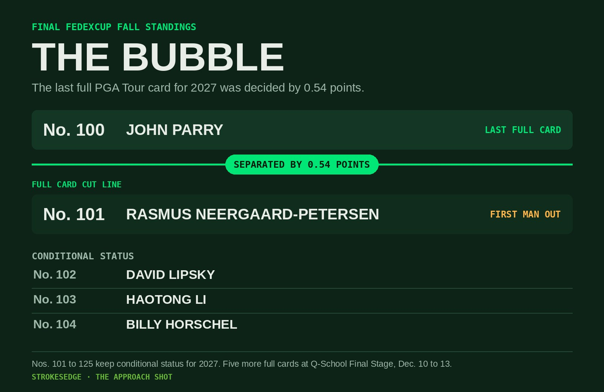
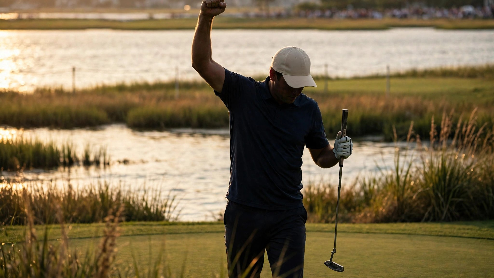

Who lost their PGA Tour card?
The fall used to hand out 125 cards. This year it handed out 100, and the squeeze was settled by half a point, a lipped-out putt and a four-man playoff on a Monday at Sea Island. Here is who lost full status, who nobody saw coming, and who we are watching when the new season starts.
The short version: the top 100 in the final FedExCup Fall standings kept full PGA Tour cards for 2027. John Parry took the last one at No. 100, Rasmus Neergaard-Petersen missed by 0.54 points at No. 101, and the list of names below the line includes an eight-time winner, a former U.S. Open champion and a Ryder Cup player from last year. Nos. 101 to 125 kept conditional status, and Final Stage of Q-School in December offers five more cards.
The new maths of the fall
For decades the number was 125. Finish inside it and your job was safe for another year. Under the Tour's revised structure, which took effect this season, only the top 100 in the FedExCup Fall standings earn full exempt status. Everyone else sorts into tiers. Nos. 101 to 110 hold conditional status in a category that is not subject to reshuffle. Nos. 111 to 125 hold conditional status that is reshuffled as the season goes. Nos. 126 to 150 get limited access to full-field events and lean on sponsor invitations.
There is one more door. Final Stage of PGA Tour Q-School runs December 10 to 13 at TPC Sawgrass and Sawgrass Country Club in Ponte Vedra Beach, and the top five finishers earn full membership for 2027. The top 40 available players below No. 100 in the final fall standings, down to No. 200, are exempt into that Final Stage. So a bad fall is not the end of the road. It is the start of a much narrower one.
The fall also paid out at the top of the standings. Nos. 51 to 60 earned places in the first two Signature Events of 2027, the AT&T Pebble Beach Pro-Am and The Genesis Invitational, through the Aon Next 10. Keep that cutoff in mind. It matters later in this piece.
The names who lost their cards
Start with the cruelest number of the week: 0.54 points. That is all that separated No. 100 from No. 101 when the RSM Classic finally ended on Monday. John Parry three-putted his final hole on Friday, missed the cut and walked off the Seaside Course in tears, certain the card was gone. He then spent two days watching other men decide his future. It landed on No. 100 exactly.
The man on the wrong side of the half point was Rasmus Neergaard-Petersen. The Dane tied for 10th at Sea Island, but a bogey on the 17th hole on Monday, in a closing stretch of 11 holes played in two over par, left him at No. 101. He keeps the best conditional status available, the non-reshuffled 101 to 110 tier, and he will get starts. He will also think about the 17th hole for a while.
David Lipsky was the only player who started the week inside the top 100 and fell out. He arrived at No. 97, missed the cut by two shots and finished No. 102. His season was not a collapse: 15 made cuts in 25 starts and a runner-up finish at the Valspar Championship. The new maths does not care. One quiet week in November outweighed all of it.
Haotong Li nearly produced the fall's great escape. He started the week at No. 134 and needed to win the RSM Classic outright to take a card. He shot 65 on Monday to reach a four-man playoff at 16 under, left an 18-foot birdie putt short on the 72nd hole, then watched a putt lip out on the first extra hole. He finished No. 103. Close enough to see the card, not close enough to hold it.
Close enough to see the card, not close enough to hold it.
The biggest name below the line is Billy Horschel. The eight-time Tour winner entered the week at No. 101, missed the cut and finished No. 104, losing the full card he has held since 2013. He keeps conditional status inside the top 125, but there is no exemption waiting to catch him. Around him sit Taylor Pendrith at No. 106, a Presidents Cup regular, and Rasmus Højgaard at No. 107. Højgaard, a Ryder Cup player last year, shared the 54-hole lead at Sea Island and tied for fifth, and it still was not enough after he played his closing 11 holes in one over par.

Further down, Chris Kirk finished No. 113 and Lucas Glover, the 2009 U.S. Open champion, finished No. 121. Joel Dahmen closed with consecutive rounds of 68 and still finished No. 127, outside even the second conditional tier, after 16 made cuts and three top 10s in 27 starts. The two college stars who arrived through PGA Tour University Accelerated, Luke Clanton (No. 133) and Gordon Sargent (No. 139), lost their cards too, and former U.S. Open champion Webb Simpson finished No. 181.
Not every famous name below the line is in trouble. Brooks Koepka finished No. 108 but remains exempt through 2028 from his 2023 PGA Championship win. Tony Finau (No. 118), Brandt Snedeker (No. 115) and Nick Dunlap (No. 150) are protected by recent tournament wins. Glover and Simpson can fall back on career money exemptions if they choose to use them, and Jason Day (No. 111) has a major medical extension available. The standings tell you who lost a card. They do not always tell you who lost his schedule.

The fall's biggest surprises
The playoff that settled the cards also produced the fall's defining story. Marco Penge arrived at Sea Island at No. 120, needing at least a two-way tie for fourth just to keep his card, after a season interrupted by a sinus infection and vertigo. He shot 65 on Monday, birdied the 18th to join the playoff, then hit his approach to six feet on the first extra hole and made the putt. First PGA Tour win, a jump of 56 places to No. 64, and spots in The Players Championship, The Sentry and the PGA Championship. He was the only player all week who played his way inside the top 100 at the finale.
The fall's other repeat story played out at the other end of the spotlight. Austin Smotherman won the Bank of Utah Championship in October, his first PGA Tour victory, in his 100th career start. Then he won again at the Butterfield Bermuda Championship. Two wins in one fall from a player most fans could not have picked out of a lineup in September, and a final standing of No. 51 that put him at the top of the Aon Next 10 queue.
At the World Wide Technology Championship, the winner was Blades Brown, a first-time winner whose name has been circulating in junior and amateur golf for years and who now has the trophy to match it. Michael Brennan kept his own surge going too, winning the Baycurrent Classic in Japan for his second victory of the season and a final standing of No. 46. And spare a thought for Belgium's Adrien Dumont de Chassart, who shot four rounds in the 60s at Sea Island, tied for seventh for his best finish of the year, and climbed from No. 128 to No. 120. Not a card, but the difference between a thin schedule and a real one.
The through line of the fall is that almost none of this was predictable in September. The fall fields are where the model earns its keep: thinner fields, motivated players, and form that the market prices slowly. Which brings us to the names that matter now.
Who we are watching in 2027
Ryan Gerard finished No. 3 in the FedExCup without winning a tournament. Read that again. Three runner-up finishes, at the Sony Open, The American Express and the Memorial, a third place at the Tour Championship, more than $10 million in earnings and a place in all four majors for 2027. He was also left off the United States Presidents Cup team in September despite that record. Players with his profile, elite consistency still waiting on a first big win, tend to be priced on the win they have not had yet rather than the golf they are actually playing. He tops our watch list.
Jacob Bridgeman finished No. 5, won twice this season including the fall's Biltmore Championship, and was picked for the Presidents Cup team by captain Brandt Snedeker. Jackson Koivun was the other young pick on that team, and he closed his year with a tie for fifth at the RSM Classic and a No. 67 final standing. When a Presidents Cup captain spends picks on two players this young, the market usually catches up a season later than it should.
Alex Fitzpatrick finished No. 6 in the standings, a rise that the Tour itself flagged among the biggest jumps of the season. Michael Thorbjornsen finished No. 44 and came within one putt of winning the RSM Classic outright, missing a seven-footer on the 72nd hole before losing the playoff. And Penge, the man of the fall, now gets a full winner's schedule to prove Sea Island was a level and not a spike.
Our model cares about one thing above everything else: approach play, the stat that repeats week to week while putting runs hot and cold. It is not a coincidence that the RSM playoff turned on approach shots, Penge's wedge to six feet against a group of opponents who scattered theirs. It is the same reason we wrote about why approach play predicts winners earlier this month. Two more names fit that lens from the fall's final weekend. Doug Ghim (No. 57) and Ben Kohles (No. 60) both closed the fall inside the Aon Next 10 cutoff, earning those Pebble Beach and Genesis starts, on the back of strong finishes at Sea Island. Neither will headline a preview show in January. Both are exactly the profile that shows up in our rankings before he shows up in the market's.
It is now the most honest stretch of the season.
The last word on the fall
The fall used to be the quiet part of the calendar, a few tournaments in nice places while the stars rested. The 100-card era ended that. It is now the most honest stretch of the season: jobs decided by half a point, a playoff with a career riding on every putt, and a December Q-School final stage with five cards left for everyone the fall turned away. The 2027 season starts in January with a smaller, hungrier tour. We will be ranking all of it, starting with the first full field of the year. The weekly analysis picks up there, and the full model runs for members from the first tee.
Get the full model every week.
The weekly workbook, the full picks card and the model rankings, emailed before the first round.
See membership Subscribe freeKeep reading
Not financial advice. Gamble responsibly.
Comments
Questions, disagreements and model talk are welcome. Comments are moderated, so keep it civil and leave the spam at home.